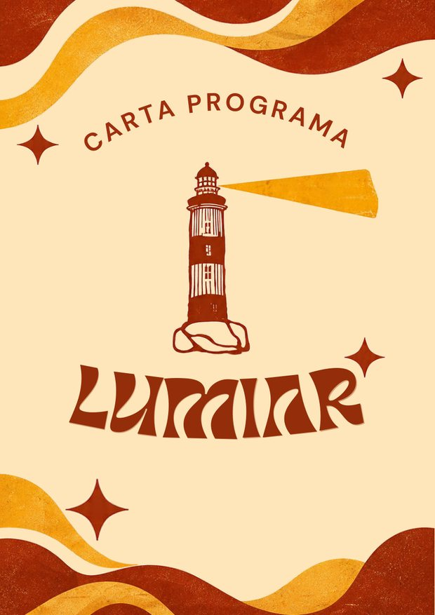

Manifesto
Eventos, vivência e acolhimento são onde a união começa: espaços em que todo mundo se sente parte.
Permanência, acesso e representação se conquistam com o CAVC presente na FEA, na USP e no Movimento Estudantil.
O que a continuidade já fez
A Lumiar não começa do zero.
Somos uma continuidade crítica de mais de dez anos, que olha para cada gestão anterior para fazer melhor. Agora é dar o próximo passo.
Conjuntura
O mundo, o Brasil, a USP e a FEA em 2026.
Como a Lumiar lê o momento em que vamos assumir o CAVC. Abra cada parte para ler.
O que muda para você
Quatro coisas para sentir já no primeiro semestre.
Propostas
O que a Lumiar quer fazer, área por área.
Abra uma área para ver as propostas e abra uma proposta para ver como ela funciona. Marque com ☆ o que importa para você; suas marcações ficam salvas neste navegador. Cada proposta tem um link para a página certa da carta programa.

Carta programa
Tudo o que a Lumiar pensa e propõe, num documento só.
A carta foi escrita por quem constrói o CAVC hoje e parte do nosso mote. Reúne o manifesto, a conjuntura, como o Centro Acadêmico vai funcionar e cada projeto das secretarias e áreas para 2027.
Sumário
Como vamos nos organizar
O CAVC que a Lumiar propõe.
Uma diretoria eleita, cinco secretarias e cinco áreas trabalhando juntas. Clique em uma frente para ver as propostas dela.
Quem faz
A chapa Lumiar.
Converse com a Lumis
Pergunta o que quiser sobre a Lumiar.
Propostas, quem está na chapa, o que já fizemos, como votar, o que é o CAVC… Escreve do seu jeito que a Lumis responde.
A Lumis responde com o que está na carta programa e no manifesto. Se ela não souber, fale com a gente pelo e-mail, WhatsApp ou Instagram.
Tem uma ideia?
Conta pra gente o que você mudaria na FEA.
Leva menos de um minuto. A carta ainda está aberta e o que vocês mandarem entra na conversa.
Dúvidas
Perguntas frequentes.
Vem lumiar com a gente.
Ajude na campanha, traga sua turma para a conversa e, no dia da eleição, vote Lumiar.